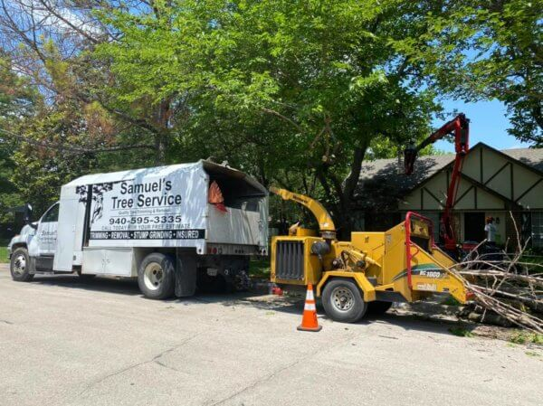
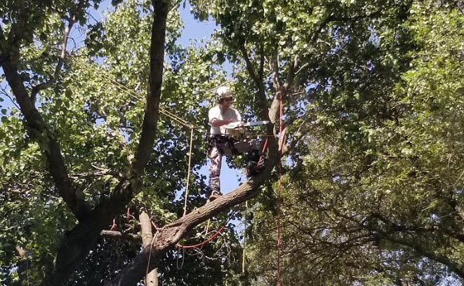
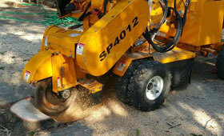

Tree Removal
Safe felling, low-impact lowering, and complete debris haul-off for dead, hazardous, or unwanted trees.
ExploreOur ISA Certified Arborist can diagnose a wide range of tree problems — fungus, disease, structural defects, decline — and then recommend the right response, whether that's treatment, pruning, or removal.
Bringing in a certified arborist before you cut is the difference between saving a healthy tree and losing a salvageable one — or, just as often, removing a hazard before it removes itself onto your roof.

Safe felling, low-impact lowering, and complete debris haul-off for dead, hazardous, or unwanted trees.
Explore
Pruning for health and structure — every cut made for a reason, never to a stub.
Explore
Grind the stump below grade with minimal disruption — the cleanest way to reclaim the spot.
ExploreTell us what you're looking at and we'll come give you a straight estimate — no pressure, no hidden fees, no charge for work you didn't authorize.